<div class="textcontainer">
<p class="margin"></p>
<h3>Final Project: A Custom Macro Keypad</h3>
<p class="margin"></p>
<p class="margin"></p>
<div class="flexrow">
<iframe width="560" height="315" src="https://www.youtube.com/embed/xuObYkerm98?si=5zo5ZUoyZ0IZLmeN"
title="YouTube video player" frameborder="0" allow="accelerometer; autoplay; clipboard-write; encrypted-media; gyroscope; picture-in-picture; web-share" allowfullscreen>
</iframe>
</div>
<p class="margin"></p>
<p class="margin"></p>
<div class="flexrow">
<a id="btn" href="finalproject.zip" download>Download the files used for my final project!
</a>
</div>
<p class="margin"></p>
<h4>Phase 1: Brainstorming</h4>
<p class="margin"></p>
I had been planning to make this for my final project since I applied to the course.
I had this idea because outside of classes, my main activity is doing
lighting design and programming for performances on and off Harvard's campus.
Macro keypads are a common sight among professional lighting programmers because
the control software that we use for theatrical lights has a command-line interface,
and some of the more advanced or specialized commands can get very long. It's far
more efficient to be able to trigger common commands with a single button press,
especially the longer commands that take a while to type out.
In the brainstorming phase, my specifications for my final project were nebulous.
The base functionality I wanted was to have several buttons to trigger macros, plus
a "program" button that would let you capture key press sequences from your computer's
keyboard and dynamically assign that to a specific button. However, I also had
other features that the keypad would ideally include:
<p class="margin"></p>
<ol>
<li>Two encoder wheels, for controlling what are called "Non-Intensity Parameters"
(like a light's pan, tilt, and color)</li>
<li>A slider or button to switch between different "profiles," so that the
keypad buttons could be mapped to twice or three times as many macros</li>
<li>A small display screen, to provide user feedback on the status of the
keypad or what macro was just triggered.</li>
</ol>
<p class="margin"></p>
During this phase, I made several sketches and diagrams by myself and while talking
to Ibrahim and the other lab TFs to try to pin down how I wanted my project to end up.
<p class="margin"></p>
<div class="flexrow">
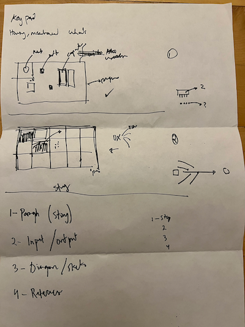
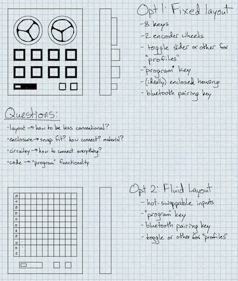
</div>
<p class="caption">Some early diagrams of what the keypad layout could be.</p>
<p class="margin"></p>
<p class="margin"></p>
<h4>Phase 2: Prototyping</h4>
<p class="margin"></p>
The prototyping phase of this project really kicked off with my
<a href="../07_outputs/index.html">Minimum Viable Product</a> assignment during
week 6 of the course. You can read up on the outcome of my MVP on its page, but
essentially at the end of week 6 I had a good starting foundation for the macro
functionality of my keypad. I had also realized several problems, though:
<p class="margin"></p>
<ul>
<li>I didn't actually know how to key my computer to register an Arduino board
as a keyboard-like input device, as opposed to an Arduino.</li>
<li>I also didn't know how to record key presses from my computer's keyboard
and send them back to the Arduino.</li>
<li>I really wasn't sure what the circuit architecture of my final project
would look like.</li>
</ul>
<p class="margin"></p>
With the help of Bobby and the other TFs, I figured out that I could use the
Arduino <a href="https://www.arduino.cc/reference/en/language/functions/usb/keyboard/">Keyboard</a>
library to send key presses to my computer. Getting the computer
to talk back to the Arduino was looking more complicated, so I ended up scrapping
the dynamic progammability aspect in favor of just setting what the macros did
ahead of time in the Arduino code. However, I did keep the idea of a 'profile'
slider switch that would let me toggle between two layers of macros.
For my MVP, I had used an Arduino Uno, but then
I switched to an ESP 32 C3 Dev Module; once I figured out I would be using the
Keyboard library (which isn't supported on ESP 32), I switched to an Adafruit
ItsyBitsy M4 Express that I found in the lab, which worked wonderfully.
<p class="margin"></p>
<div class="flexrow">
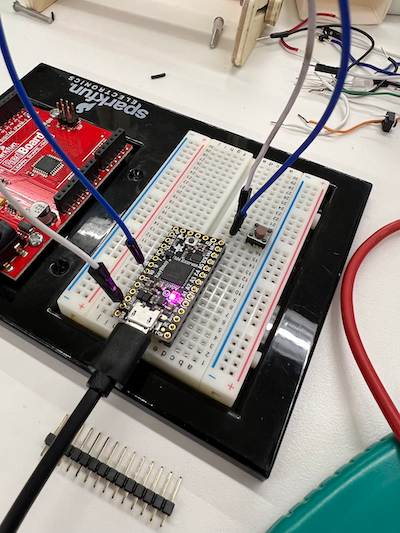
</div>
<p class="caption">I set up a test circuit with just the ItsyBitsy and a single button to make sure my wiring logic was correct.</p>
<p class="margin"></p>
I also wanted to switch to a different kind of button. My MVP used the small brown
breadboard buttons that we had in the lab, but I wanted to use the larger black
buttons because they looked more polished and had a nicer click action. However,
trying to run my code with the black buttons was producing odd behavior, where
my key presses would trigger infinitely half the time and not trigger at all the
other half the time. Eventually, I figured out that the black buttons were toggle
buttons, not push buttons, so instead of completing a circuit while they were held
down, they connected and disconnected the circuit each time they were pressed.
<p class="margin"></p>
<div class="flexrow">
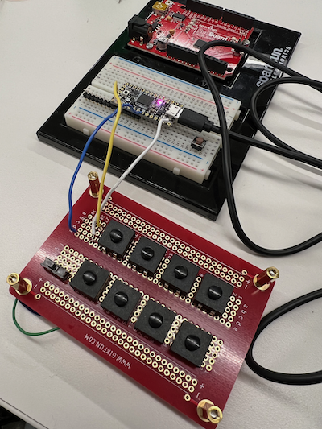
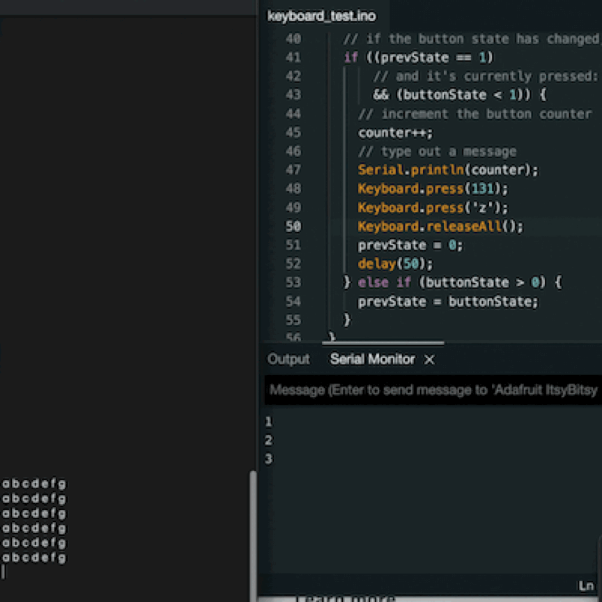
</div>
<p class="caption">For testing the buttons, I wrote a version of my code with just a single macro button assigned to the 'Undo' command, then connected the Arduino pin to each button in turn to test the solder joints.</p>
<p class="margin"></p>
I noticed that on every other press the black buttons had a tendency to trigger
twice; this behavior is visible in the gif above. PK helped me open up one of the buttons to take
a look at the mechanism, where we found that the reason for this was because each press
rotates a metal disc so that it does or doesn't connect the two terminals of the
button; when the button is in its "on" state, with the circuit closed, a half-press
will disconnect the circuit and then re-connect it, thus registering as two presses.
I solved this in my code by adding a cooldown timer to each button so they could only
be pressed once every 100 milliseconds.
<p class="margin"></p>
<div class="flexrow">
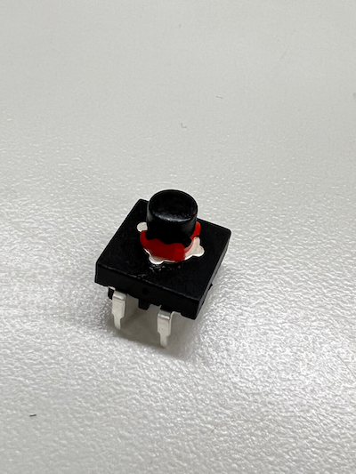
</div>
<div class="flexrow">
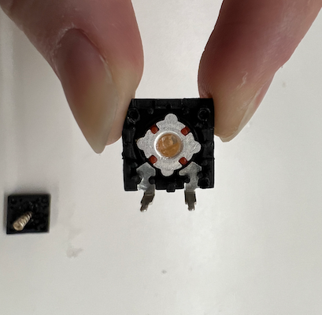
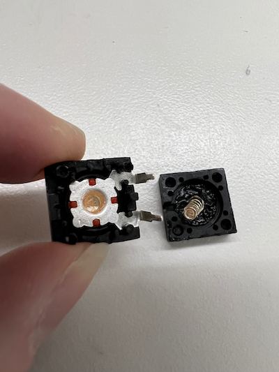
</div>
<p class="caption">Looking at the button mechanism revealed that this was a hardware problem, not a software one.</p>
<p class="margin"></p>
<p class="margin"></p>
<h4>Phase 3: Final Planning</h4>
<p class="margin"></p>
I decided to upgrade my circuitry to a solderable breadboard for a more polished
look. Because of the size of my buttons and the number of pins on the board, I
had to use two breadboards, but I still wanted the size of the keypad to be pretty
small, so I went with a double-decker approach. I planned to put the Arduino on
the bottom layer and wire it to buttons on the top layer, then stack the boards
by screwing them together with a brass spacer in between. To hold the stack in place,
I would design an enclosure that the boards could screw into.
<p class="margin"></p>
<div class="flexrow">
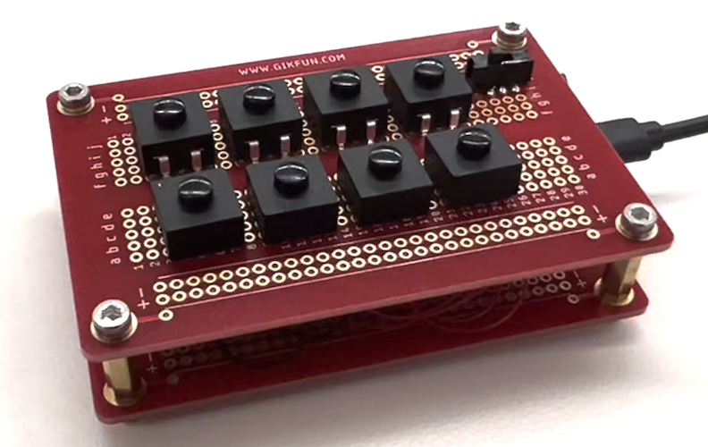
</div>
<p class="caption">Stacking the breadboards meant I could keep my form factor and still have room for all my components.</p>
<p class="margin"></p>
I noticed a warning on the documentation page for the Keyboard library that reminded
users to be careful of giving the Arduino unlimited access to the keyboard, because
if the Arduino was endlessly sending key presses it would make it very hard to regain
control. Sure enough, at one point I was trying to test my code only to discover
that the Arduino was constantly typing text onto my computer, thus making it
nearly impossible for me to upload new code.
<p class="margin"></p>
I managed to fix this by holding down
the Arduino's reset switch until the code was just starting to upload, so that the
upload would interrupt the current process and break the Arduino's control. After
that, though, I found advice online from people who'd run into this issue and
added a 'safety' pin or button to the circuit that would disable the program if
connected to ground. I decided to add this to my implementation, and also noted
that I should add a separate reset switch wired to the Arduino's RST pin because
the reset switch on the board would be out of reach in the final enclosure.
<p class="margin"></p>
<p class="margin"></p>
<h4>Phase 4: Assembly</h4>
<p class="margin"></p>
For the final enclosure, I had
decided to design a 3D-printed base with laser-cut acrylic sides. The base would
have divots to add screw inserts, so that I could secure my circuit, and the edges
would slot together with the acrylic sides. I used clear acrylic so you could see
the circuitry inside the enclosure. The sides and base were fixed together with
T-slot joints -- a type of joint where a screw goes through the face of one piece
into the edge of another, which holds a captive nut in it that the screw locks into.
<p class="margin"></p>
<div class="flexrow">
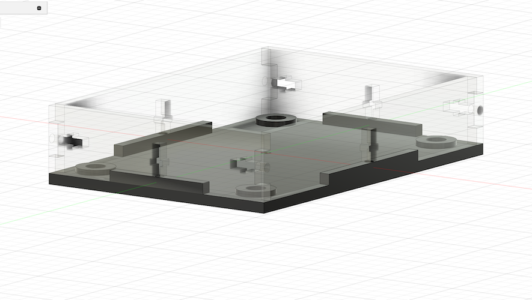
</div>
<p class="caption">I designed the enclosure as one assembly in Fusion 360 to make sure the pieces all fit together, then separated the components to fabricate them.</p>
<p class="margin"></p>
My first version of the enclosure had some slight spacing issues: the slots for the
nuts were slightly too big, so the sides weren't held in place correctly; the
divots in the base didn't quite match the location of the screw holes on the
breadboards; and the openings on the sides for the Arduino's micro-USB port and the
reset and safety switches weren't quite the right size. I went back to my model
and adjusted the dimensions, then re-printed the base and re-cut the sides, and
version two worked much better.
<p class="margin"></p>
<div class="flexrow">
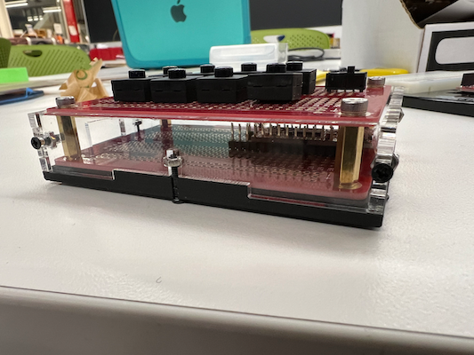
</div>
<p class="caption">I tested the first version of the enclosure before soldering the circuit and was happy about the aesthetics of the design.</p>
<p class="margin"></p>
Soldering my breadboard stack was a little tricky. First, I soldered the eight
macro buttons and the profile slider switch to the top board, then I soldered
the microcontroller and the external safety and reset buttons to the bottom board.
From there, I wrote out a list of all the solder connections I'd need to make so I
could reference it at the solder bench.
<p class="margin"></p>
<div class="flexrow">
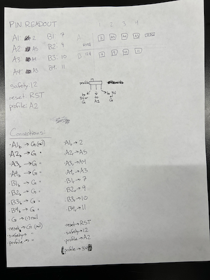
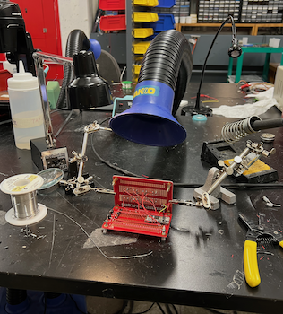
</div>
<p class="caption">Top: my list of connections to solder. The macro buttons are labelled as if in a grid with rows A and B and columns 1 through 4.</p>
<p class="caption">Bottom: my soldering setup, with the two boards held open but as close as possible for minimum excess wire.</p>
<p class="margin"></p>
I used standard-thickness wire to make
any connections that were on just one board (e.g. connecting the safety and
reset buttons), and then I used thinner, more flexible wire to connect the buttons
on top to the Arduino on the bottom. I soldered the two halves together with the
top side propped open, then once everything was connected I folded the top down
and gently coiled the excess wire between the boards.
<p class="margin"></p>
As I connected more of the wires, my freedom of movement got more and more limited;
some of the connections were very tight. I'm pretty proud that I was able to
solder everything down as well as I did!
<p class="margin"></p>
<div class="flexrow">
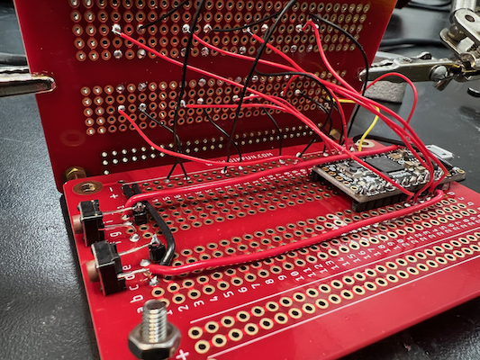
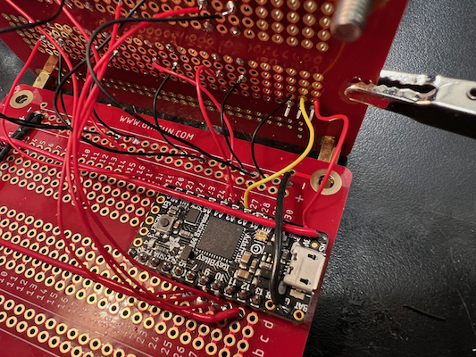
</div>
<p class="caption">It took me several hours to carefully solder all the wires into place. I was worried I would break them by bending them too much.</p>
<p class="margin"></p>
I used a soldering iron to embed the screw inserts into the printed base (by heating
up the metal inserts to soften the plastic around them, then pushing them into place).
The divots in the base had been designed pretty close to the dimensions of the inserts,
but since 3D printed parts tend to expand a little outside of their bounds, there
was enough extra material for the inserts to fit snugly. Last but not least, I
screwed the breadboards into the base and assembled the housing, and the hardware
for my project was complete!
<p class="margin"></p>
<div class="flexrow">
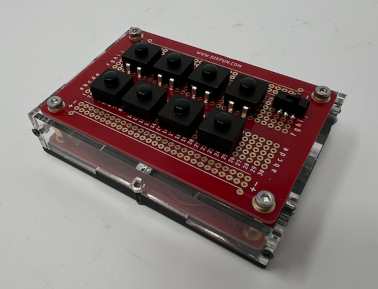
</div>
<div class="flexrow">
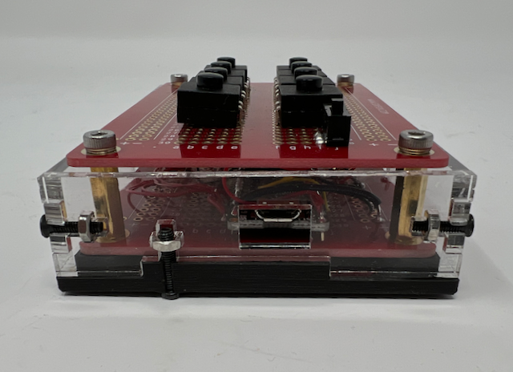
</div>
<div class="flexrow">
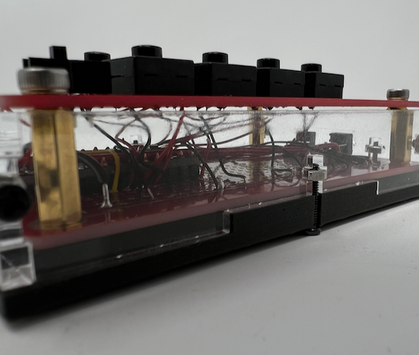
</div>
<p class="caption">The finished keypad.</p>
<p class="margin"></p>
The code ended up being a little simpler than I had anticipated -- or maybe that
was just because I'd figured out a lot of it early on. I used the class functionality
from my MVP to store the eight buttons to reduce code duplication when checking
whether a button had been pressed, and also so that each one could have its own
read pin and cooldown timer variable. Because these are toggle buttons, each one also needed
its own state variable to keep track of whether the circuit was open or closed,
because you check whether a toggle button has been pressed by seeing whether its
state is different from what it was just a moment ago.
<p class="margin"></p>
I wanted to save the macro sequences also within the class, as a kind of dynamically
variable function, but that kind of functionality doesn't work well in C++. Instead,
I wrote macro functions at the bottom of my code and had each button call the
appropriate function when pressed. To implement the two layers of macros, I just
added a check at the top of the loop code for whether the profile slider switch
was on or off. Lastly, I included the code for my safety button right at the top
of the loop code, so that if a bug ever caused me to lose control of my keyboard,
I could hit the safety button to delay the code for 10 seconds (which should be
long enough to upload new code from my computer).
</div>